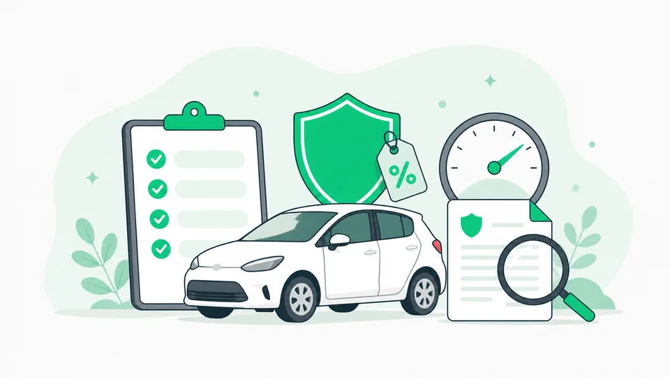

자동차보험 갱신 전 10분 점검표
갱신 견적이 올랐다고 그냥 넘기면, 받을 수 있는 할인을 놓친 채 1년을 삽니다. 다이렉트와 설계사를 같은 담보로 비교하고, 특약이 빠지지 않았는지, 사고 이력이 할증으로 어떻게 반영되는지를 만기 전 10분으로 점검하는 순서입니다.

만기 30일 전, 이 순서로 10분
자동차보험은 만기 전까지 갱신하면 되지만, 비교할 시간을 확보하는 것이 실제 절감액을 만듭니다. 만기 3일 전에 견적을 받으면 다이렉트 특유의 시간 할인도 놓치고, 특약을 검토할 여유도 없습니다.
- 1지난해 증권부터 꺼냅니다가입 담보(대인·대물·자기신체·자기차량·무보험차상해)와 한도, 특약 목록을 확인합니다. 작년에 어떤 할인을 받았는지가 올해 비교의 기준입니다.
- 2같은 담보로 견적을 3곳 받습니다다이렉트 2곳과 설계사(또는 보험비교몰) 1곳입니다. 담보가 다르면 보험료 비교가 무의미하므로, 대물 한도(2억·5억·10억)를 반드시 맞춰야 합니다.
- 3주행거리를 확인합니다계기판 사진이나 블랙박스 주행거리로 연간 주행거리를 확인합니다. 마일리지 특약은 구간별로 할인 폭이 커서, 2,000km 이하 구간이 가장 큽니다.
- 4안전운전 점수를 조회합니다보험사 앱이나 커넥티드카 서비스에서 확인합니다. 점수 구간이 높을수록 할인이 커지고, 다음 해 점수까지 예측해 볼 수 있습니다.
- 5자녀·첨단장치 특약을 확인합니다태아 또는 자녀가 있으면 자녀 할인, 차선이탈경고·전방충돌방지 등 장치가 있으면 장치별 할인이 있습니다. 서류가 필요한 경우 미리 준비합니다.
- 6자동갱신을 점검합니다자동갱신을 걸어 두고 다른 견적을 안 받는 경우가 많습니다. 갱신 전 알림을 설정하고, 자동갱신을 쓸 경우 보험료 인상 폭을 확인하세요.
다이렉트 vs 설계사 — 무엇으로 비교해야 하나
다이렉트가 무조건 싸고 설계사가 무조건 좋다는 이야기는 둘 다 틀렸습니다. 같은 담보를 기준으로 보면 차이는 수수료와 서비스의 교환입니다.
| 구분 | 특징 | 유리한 경우 |
|---|---|---|
| 다이렉트 | 수수료가 낮아 같은 담보에서 보험료가 낮은 편. 특약은 직접 선택 | 무사고·단순 갱신, 특약 구성을 이미 아는 경우 |
| 설계사 | 특약 조합 상담, 사고 처리와 보상 협의 지원 | 사고 이력이 있거나 운전자 범위·법인 차량이 복잡한 경우 |
| 보험비교몰 | 여러 보험사 견적을 한 화면에서 비교. 상담 연결 | 여러 상품을 빠르게 훑고 싶은 경우 |
주의할 점은 비교 기준을 맞추지 않으면 결론이 뒤집힌다는 것입니다. 자기부담금, 운전자 범위(가족 한정·누구나), 대물 한도, 무보험차상해 한도가 다르면 보험료 차이는 할인 차이가 아니라 담보 차이입니다. 견적을 받을 때 네 항목을 적어 두고 비교하세요.
매년 빠지기 쉬운 특약 7가지
특약은 보험료를 낮추는 항목과 보장을 넓히는 항목이 섞여 있습니다. 아래 목록은 갱신할 때 있었는지 없었는지를 확인해야 하는 항목입니다.
| 특약 | 내용 | 확인할 것 |
|---|---|---|
| 마일리지 | 연간 주행거리가 짧으면 보험료 할인 | 연 주행거리 구간, 가입 후 주행거리 변경 시 정산 조건 |
| 블랙박스 | 블랙박스 장착 차량 할인 | 장착 여부와 증빙(사진·영수증) 필요 여부 |
| 안전운전(UBI) | 안전운전 점수 구간별 할인 | 점수 산정 방식, 다음 해 점수 반영 시점 |
| 자녀 할인 | 태아·자녀가 있으면 할인 | 자녀 수, 가입 기간 중 출생 시 추가 반영 가능 여부 |
| 첨단안전장치 | 차선이탈경고·전방충돌방지 등 장치별 할인 | 차량 옵션 목록, 장치별 할인 중복 가능 여부 |
| 대중교통 이용 | 연간 주행거리가 매우 짧은 경우 대안 할인 | 마일리지 특약과 중복 가능 여부 |
| 운전자 범위 | 가족 한정·부부 한정 등 범위 축소로 할인 | 실제 운전자, 자녀가 나중에 운전할 가능성 |
사고할증과 물적할증 기준
자동차보험은 사고가 나면 다음 갱신 때 보험료가 오르고, 그 효과가 3년가량 이어집니다. 사고 1건의 실제 비용은 보험금뿐 아니라 앞으로 3년간 더 내는 보험료까지 포함해 계산해야 합니다.
- 할인 등급 — 무사고 기간이 길수록 등급이 올라 보험료가 내려갑니다. 사고가 나면 등급이 내려가 할인 폭이 줄어듭니다.
- 사고 점수 — 대인·대물 사고의 보상 금액과 건수로 점수를 매기고, 점수에 따라 할증 폭이 달라집니다. 같은 사고라도 보상 금액이 크면 할증이 커집니다.
- 물적할증 기준 — 대물 보상 금액이 일정 기준(보통 200만원) 이하인 사고는 할증 대신 할인만 멈추는 경우가 있습니다. 다만 보험사·상품별로 기준과 처리 방식이 달라 확인이 필요합니다.
- 자기부담금 — 사고 금액이 자기부담금보다 조금 클 때 보험을 쓰면, 할증으로 3년간 더 내는 돈이 보상액보다 커질 수 있습니다.
그래서 자잘한 사고는 보험사에 먼저 물어보는 것이 좋습니다. "이 사고를 보험으로 처리하면 다음 갱신 보험료가 얼마나 오르나"를 상담하면 대략적인 할증 시뮬레이션을 받을 수 있습니다. 다만 인적 사고(대인)는 할증보다 보상 규모가 훨씬 크므로, 금액만 보고 자기부담으로 처리하는 판단은 위험합니다.
관련 계산기
- 자동차보험 할인 특약 계산기 — 주행거리·블랙박스·안전운전·자녀·첨단장치를 순서대로 적용해 최종 보험료를 계산합니다.
- 자동차보험·실손보험 갱신 점검 가이드 — 보험 갱신 전반의 점검 항목을 함께 볼 수 있습니다.
- 실손 세대 전환 계산기 — 실손보험 유지와 전환을 5년·10년 누적으로 비교합니다.
자주 묻는 질문
Q다이렉트가 설계사보다 항상 싼가요?▾
같은 담보라면 대체로 다이렉트가 낮습니다. 다만 설계사가 여러 보험사를 조합해 더 낮은 견적을 내는 경우도 있고, 사고 처리 지원이라는 서비스가 붙습니다. 대물 한도·자기부담금·운전자 범위를 맞춘 뒤 비교해야 정확합니다.
Q주행거리가 짧으면 얼마나 아낄 수 있나요?▾
구간에 따라 다르지만 연 2,000km 이하 구간의 할인이 가장 큽니다. 가입 후 실제 주행거리가 구간을 넘으면 정산에서 할인이 줄거나 환수될 수 있으니, 계기판 사진으로 미리 확인하세요.
Q사고 1건이면 3년간 보험료가 오르나요?▾
할인 등급이 내려가고 사고 점수가 붙어 다음 갱신부터 보험료가 오르며, 그 효과가 3년가량 이어지는 것이 일반적입니다. 보상 금액이 물적할증 기준 이하라면 할증 없이 할인만 멈추는 경우도 있어 보험사에 확인이 필요합니다.
Q만기일을 놓치면 어떻게 되나요?▾
보험 기간이 끝나면 무보험 상태가 됩니다. 무보험 운전은 사고 시 보상은 물론 형사 책임 문제가 생길 수 있어, 만기 30일 전에 갱신을 끝내는 것이 안전합니다. 자동갱신을 쓰더라도 보험료와 담보 변경 여부는 직접 확인하세요.
참고한 기준
- 자동차손해배상 보장법 — 의무보험 가입 의무와 무보험 운전의 책임
- 보험개발원 할인할증 등급 및 사고 점수 산정 방식
- 각 손해보험사의 마일리지·블랙박스·안전운전·자녀·첨단안전장치 특약 안내(2026년 11월 확인)
- 자동차보험 표준약관 — 자기부담금과 물적할증 기준
※ 이 페이지는 일반적인 정보이며 보험·법률 자문이 아닙니다. 실제 가입 조건과 할인율은 보험사 상품설명서와 약관으로 확인하세요.